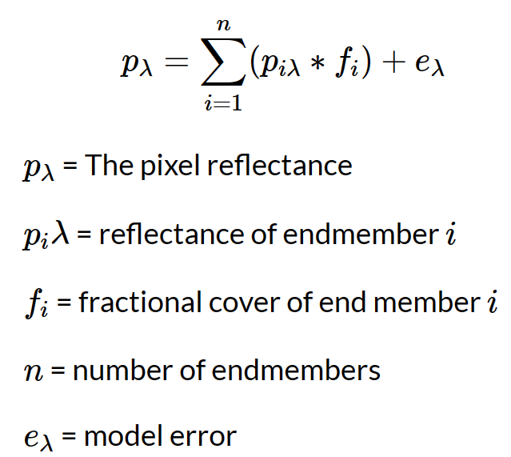
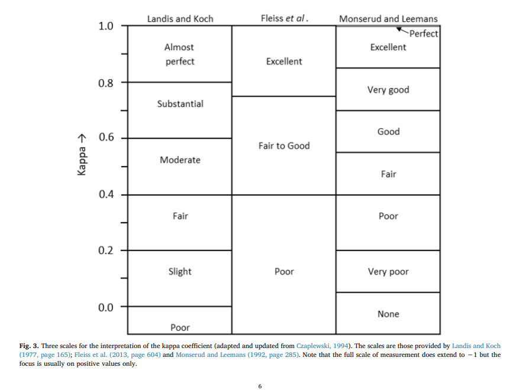
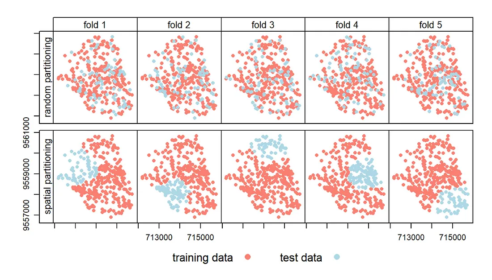
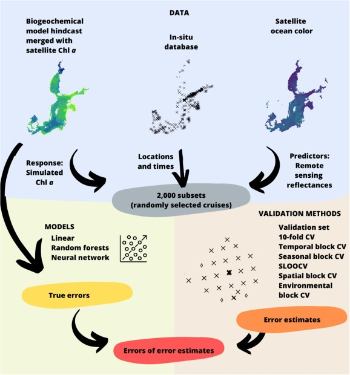

7 Chapter 7 - Classification II
7.1 Summary
7.1.1 Object based image analysis and sub pixel analysis
7.1.1.1 Object based image analysis
- Instead of considering cells we consider shapes based on the similarity (homogeneity) or difference (heterogeneity) of the cells = superpixels
SLIC (Simple Linear Iterative Clustering) Algorithm for Superpixel generation is the most common method
7.1.1.2 Sub pixel analysis
- SMA determines the proportion or abundance of landcover per pixel
- the assumption that reflectance measured at each pixel is represented by the linear sum of endmembers weighted by the associated endmember fraction
- Typically we have a few endmembers that are spectrally pure
- Sum of end member reflectance * fraction contribution to best-fit mixed spectrum

7.1.2 Assess the accuracy
Confusion Matrix: Date: February 17, 2019 Author: Rachel Draelos, MD, PhD Confusion matrices are calculated using the predictions of a model on a data set. By looking at a confusion matrix, you can gain a better understanding of the strengths and weaknesses of your model, and you can better compare two alternative models to understand which one is better for your application. Traditionally, a confusion matrix is calculated using a model’s predictions on a held-out test set.

Confusion Matrix Data source:glassboxmedicine
producer’s accuracy defined as the fraction of correctly classified pixels (TP) compared to ground truth data (TP+FN)*TP/(TP+FN)
user’s accuracy defined as the fraction of correctly classified pixels (TP) relative to all others classified as a particular land cover (TP+FP)*TP/(TP+FP)-FP is different
overall accuracy represents the combined fraction of correctly classified pixels (TP +TN) across all land cover types (TP+FP+FN+TN)*(TP+TN)/(TP+FP+TN+FN)
Source: Barsi et al. 2018 Accuracy Dimensions in Remote SensingA good Kappa value

Kappa Value
7.1.3 Cross Validation
When we do the steps of fixed partition, we should consider Spatial autocorrelation between training and test sets!
7.1.4 Spatial Cross Validation
- spatially partition the folded data, folds are from cross validation
- disjoint (no common boundary) using k -means clustering (number of points and a distance)
- same as cross validation but with clustering to the folds…
- stops our training data and testing data being near each other…
in other words this makes sure all the points (or pixels) we train the model with a far away from the points (or pixels) we test the model with.

Cross Validation vs. Spatial Cross Validation
Source: Illustration of default cross-validation vs. spatial cross-validation. Image from Lovelace, et al.
7.2 Applications
- Spatiotemporal distribution of labeled data can bias the validation and selection of supervised learning algorithms: A marine remote sensing example(Stock, 2022)
This paper highlights the potential biases that can occur when using supervised learning algorithms for marine remote sensing applications. Specifically, it highlights the importance of careful statistical design when creating and validating tagged datasets for such applications. The paper also compares different validation statistical designs and shows that a combination of using multiple validation methods and critically discussing error estimates can help mitigate these biases. One of the more classic is the 10-fold cross-validation approach, where the data is divided into 10 random subsets of equal size, one after the other, with each fold kept only once, to validate the model trained on the remaining 9 folds. There is also spatial leave-one-out cross-validation, in which each observation is left out only once for validation, while all other observations are used for training. This approach has been modified to account for spatially autocorrelated observations by excluding not only the held-out observation, but also all observations within a distance threshold. It is clear from this article that no single validation method provides a comprehensive understanding of algorithm error, which highlights the importance of supervised learning using imperfect spatio-temporal data as a difficult data exploration problem. It is therefore also suggested that several complementary methods are regularly used to estimate the predictive accuracy of supervised learning algorithms, and statistical accuracy assessments that consider representativeness, dependence and smoothness issues are critically discussed.

7.3 Reflection
These weeks have been progressively more difficult and informative. Thanks to Andy’s explanations, I was able to gain more clarity on the week’s content. This week I learnt about classification and accuracy validation I learnt that we can’t balance two types of accuracy, user precision and producer accuracy, and that we need to be aware of the need to consider autocorrelation when doing cross-validation. Aside from this, I was initially confused by the Kappa coefficient, but after gaining a better understanding I learnt that the Kappa coefficient ranges from -1 to 1 and is used to assess the level of agreement between two sets of data, allowing researchers to assess the accuracy of classification algorithms and identify areas where improvements can be made to improve the accuracy of classification algorithms.
7.4 Reference
Stock, A., 2022. Spatiotemporal distribution of labeled data can bias the validation and selection of supervised learning algorithms: A marine remote sensing example. ISPRS J. Photogramm. Remote Sens. 187, 46–60. https://doi.org/10.1016/j.isprsjprs.2022.02.023